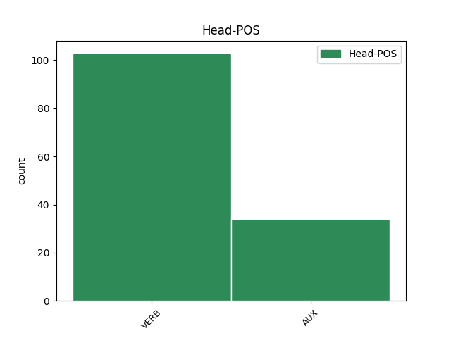

Distribution of features within this leaf

Agreement Rules sorted by frequency.
- When the dependent token is the modifer(mod) of the head token,
1 Quando _ _ _ _ 0 _ _ _
2 c’ _ _ _ _ 0 _ _ _
3 è essere VERB V Mood=Ind|Number=Sing|Person=3|Tense=Pres|VerbForm=Fin 8 mod _ _
4 il _ _ _ _ 0 _ _ _
5 terremoto _ _ _ _ 0 _ _ _
6 la _ _ _ _ 0 _ _ _
7 terra _ _ _ _ 0 _ _ _
8 trema tremare VERB V Mood=Ind|Number=Sing|Person=3|Tense=Pres|VerbForm=Fin 0 _ _ _
9 e _ _ _ _ 0 _ _ _
10 si _ _ _ _ 0 _ _ _
11 muove _ _ _ _ 0 _ _ _
12 . _ _ _ _ 0 _ _ _
1 Il _ _ _ _ 0 _ _ _
2 titolo _ _ _ _ 0 _ _ _
3 di _ _ _ _ 0 _ _ _
4 la _ _ _ _ 0 _ _ _
5 canzone _ _ _ _ 0 _ _ _
6 che _ _ _ _ 0 _ _ _
7 Luciano _ _ _ _ 0 _ _ _
8 Ligabue _ _ _ _ 0 _ _ _
9 ha _ _ _ _ 0 _ _ _
10 composto _ _ _ _ 0 _ _ _
11 per _ _ _ _ 0 _ _ _
12 il _ _ _ _ 0 _ _ _
13 film _ _ _ _ 0 _ _ _
14 Da _ _ _ _ 0 _ _ _
15 zero _ _ _ _ 0 _ _ _
16 a _ _ _ _ 0 _ _ _
17 dieci _ _ _ _ 0 _ _ _
18 è essere VERB V Mood=Ind|Number=Sing|Person=3|Tense=Pres|VerbForm=Fin 0 _ _ _
19 : _ _ _ _ 0 _ _ _
20 Questa _ _ _ _ 0 _ _ _
21 è essere AUX V Mood=Ind|Number=Sing|Person=3|Tense=Pres|VerbForm=Fin 18 comp:obj _ _
22 la _ _ _ _ 0 _ _ _
23 mia _ _ _ _ 0 _ _ _
24 vita _ _ _ _ 0 _ _ _
25 . _ _ _ _ 0 _ _ _
Disagree Examples:
1 ora _ _ _ _ 0 _ _ _
2 , _ _ _ _ 0 _ _ _
3 credo credere VERB V Mood=Ind|Number=Sing|Person=1|Tense=Pres|VerbForm=Fin 0 _ _ _
4 lo _ _ _ _ 0 _ _ _
5 si _ _ _ _ 0 _ _ _
6 possa potere AUX VM Mood=Sub|Number=Sing|Person=3|Tense=Pres|VerbForm=Fin 3 comp:obj _ _
7 dire _ _ _ _ 0 _ _ _
8 , _ _ _ _ 0 _ _ _
9 il _ _ _ _ 0 _ _ _
10 vostro _ _ _ _ 0 _ _ _
11 Paese _ _ _ _ 0 _ _ _
12 è _ _ _ _ 0 _ _ _
13 incamminato _ _ _ _ 0 _ _ _
14 su _ _ _ _ 0 _ _ _
15 la _ _ _ _ 0 _ _ _
16 strada _ _ _ _ 0 _ _ _
17 giusta _ _ _ _ 0 _ _ _
18 " _ _ _ _ 0 _ _ _
19 . _ _ _ _ 0 _ _ _
1 Il _ _ _ _ 0 _ _ _
2 problema _ _ _ _ 0 _ _ _
3 di _ _ _ _ 0 _ _ _
4 l' _ _ _ _ 0 _ _ _
5 appioppare _ _ _ _ 0 _ _ _
6 targhette _ _ _ _ 0 _ _ _
7 non _ _ _ _ 0 _ _ _
8 è _ _ _ _ 0 _ _ _
9 tanto _ _ _ _ 0 _ _ _
10 quello _ _ _ _ 0 _ _ _
11 di _ _ _ _ 0 _ _ _
12 " _ _ _ _ 0 _ _ _
13 marchiare _ _ _ _ 0 _ _ _
14 " _ _ _ _ 0 _ _ _
15 un _ _ _ _ 0 _ _ _
16 personaggio _ _ _ _ 0 _ _ _
17 , _ _ _ _ 0 _ _ _
18 anche _ _ _ _ 0 _ _ _
19 se _ _ _ _ 0 _ _ _
20 , _ _ _ _ 0 _ _ _
21 lo _ _ _ _ 0 _ _ _
22 ammetto _ _ _ _ 0 _ _ _
23 , _ _ _ _ 0 _ _ _
24 dovesse dovere AUX VM Mood=Sub|Number=Sing|Person=3|Tense=Imp|VerbForm=Fin 29 mod _ _
25 capitare _ _ _ _ 0 _ _ _
26 a _ _ _ _ 0 _ _ _
27 me _ _ _ _ 0 _ _ _
28 mi _ _ _ _ 0 _ _ _
29 arrabbierei arrabbiare VERB V Mood=Cnd|Number=Sing|Person=1|Tense=Pres|VerbForm=Fin 0 _ _ _
30 moltissimo _ _ _ _ 0 _ _ _
31 ... _ _ _ _ 0 _ _ _
32 . _ _ _ _ 0 _ _ _
1 Qualunque _ _ _ _ 0 _ _ _
2 sia essere AUX V Mood=Sub|Number=Sing|Person=3|Tense=Pres|VerbForm=Fin 11 mod _ _
3 il _ _ _ _ 0 _ _ _
4 numero _ _ _ _ 0 _ _ _
5 di _ _ _ _ 0 _ _ _
6 sfollati _ _ _ _ 0 _ _ _
7 , _ _ _ _ 0 _ _ _
8 il _ _ _ _ 0 _ _ _
9 governo _ _ _ _ 0 _ _ _
10 croato _ _ _ _ 0 _ _ _
11 nega negare VERB V Mood=Ind|Number=Sing|Person=3|Tense=Pres|VerbForm=Fin 0 _ _ _
12 che _ _ _ _ 0 _ _ _
13 siano _ _ _ _ 0 _ _ _
14 stati _ _ _ _ 0 _ _ _
15 espulsi _ _ _ _ 0 _ _ _
16 e _ _ _ _ 0 _ _ _
17 nega _ _ _ _ 0 _ _ _
18 anche _ _ _ _ 0 _ _ _
19 qualsiasi _ _ _ _ 0 _ _ _
20 volontà _ _ _ _ 0 _ _ _
21 di _ _ _ _ 0 _ _ _
22 pulizia _ _ _ _ 0 _ _ _
23 etnica _ _ _ _ 0 _ _ _
24 in _ _ _ _ 0 _ _ _
25 le _ _ _ _ 0 _ _ _
26 regioni _ _ _ _ 0 _ _ _
27 appena _ _ _ _ 0 _ _ _
28 riconquistate _ _ _ _ 0 _ _ _
29 . _ _ _ _ 0 _ _ _
1 Questo _ _ _ _ 0 _ _ _
2 - _ _ _ _ 0 _ _ _
3 è _ _ _ _ 0 _ _ _
4 detto _ _ _ _ 0 _ _ _
5 in _ _ _ _ 0 _ _ _
6 una _ _ _ _ 0 _ _ _
7 nota _ _ _ _ 0 _ _ _
8 di _ _ _ _ 0 _ _ _
9 Rc _ _ _ _ 0 _ _ _
10 - _ _ _ _ 0 _ _ _
11 " _ _ _ _ 0 _ _ _
12 non _ _ _ _ 0 _ _ _
13 significa significare VERB V Mood=Ind|Number=Sing|Person=3|Tense=Pres|VerbForm=Fin 0 _ _ _
14 prendere _ _ _ _ 0 _ _ _
15 posizione _ _ _ _ 0 _ _ _
16 contro _ _ _ _ 0 _ _ _
17 una _ _ _ _ 0 _ _ _
18 di _ _ _ _ 0 _ _ _
19 le _ _ _ _ 0 _ _ _
20 fazioni _ _ _ _ 0 _ _ _
21 in _ _ _ _ 0 _ _ _
22 lotta _ _ _ _ 0 _ _ _
23 , _ _ _ _ 0 _ _ _
24 ma _ _ _ _ 0 _ _ _
25 è _ _ _ _ 0 _ _ _
26 un _ _ _ _ 0 _ _ _
27 giusto _ _ _ _ 0 _ _ _
28 atto _ _ _ _ 0 _ _ _
29 di _ _ _ _ 0 _ _ _
30 protesta _ _ _ _ 0 _ _ _
31 contro _ _ _ _ 0 _ _ _
32 una _ _ _ _ 0 _ _ _
33 squadra _ _ _ _ 0 _ _ _
34 che _ _ _ _ 0 _ _ _
35 rappresenta _ _ _ _ 0 _ _ _
36 ufficialmente _ _ _ _ 0 _ _ _
37 un _ _ _ _ 0 _ _ _
38 paese _ _ _ _ 0 _ _ _
39 responsabile _ _ _ _ 0 _ _ _
40 , _ _ _ _ 0 _ _ _
41 come _ _ _ _ 0 _ _ _
42 altri _ _ _ _ 0 _ _ _
43 , _ _ _ _ 0 _ _ _
44 di _ _ _ _ 0 _ _ _
45 genocidi _ _ _ _ 0 _ _ _
46 in _ _ _ _ 0 _ _ _
47 atto _ _ _ _ 0 _ _ _
48 ( _ _ _ _ 0 _ _ _
49 uguale _ _ _ _ 0 _ _ _
50 richiesta _ _ _ _ 0 _ _ _
51 avremmo avere AUX VA Mood=Cnd|Number=Plur|Person=1|Tense=Pres|VerbForm=Fin 13 mod _ _
52 fatto _ _ _ _ 0 _ _ _
53 in _ _ _ _ 0 _ _ _
54 i _ _ _ _ 0 _ _ _
55 confronti _ _ _ _ 0 _ _ _
56 di _ _ _ _ 0 _ _ _
57 qualsiasi _ _ _ _ 0 _ _ _
58 altra _ _ _ _ 0 _ _ _
59 squadra _ _ _ _ 0 _ _ _
60 ufficiale _ _ _ _ 0 _ _ _
61 di _ _ _ _ 0 _ _ _
62 una _ _ _ _ 0 _ _ _
63 di _ _ _ _ 0 _ _ _
64 le _ _ _ _ 0 _ _ _
65 fazioni _ _ _ _ 0 _ _ _
66 in _ _ _ _ 0 _ _ _
67 lotta _ _ _ _ 0 _ _ _
68 ) _ _ _ _ 0 _ _ _
69 " _ _ _ _ 0 _ _ _
70 . _ _ _ _ 0 _ _ _
1 Insomma _ _ _ _ 0 _ _ _
2 , _ _ _ _ 0 _ _ _
3 comunque _ _ _ _ 0 _ _ _
4 vada _ _ _ _ 0 _ _ _
5 , _ _ _ _ 0 _ _ _
6 si _ _ _ _ 0 _ _ _
7 tratti trattare VERB V Mood=Sub|Number=Sing|Person=3|Tense=Pres|VerbForm=Fin 14 mod _ _
8 di _ _ _ _ 0 _ _ _
9 fastidio _ _ _ _ 0 _ _ _
10 o _ _ _ _ 0 _ _ _
11 di _ _ _ _ 0 _ _ _
12 recriminazioni _ _ _ _ 0 _ _ _
13 , _ _ _ _ 0 _ _ _
14 resta restare VERB V Mood=Ind|Number=Sing|Person=3|Tense=Pres|VerbForm=Fin 0 _ _ _
15 sempre _ _ _ _ 0 _ _ _
16 una _ _ _ _ 0 _ _ _
17 solenne _ _ _ _ 0 _ _ _
18 bocciatura _ _ _ _ 0 _ _ _
19 per _ _ _ _ 0 _ _ _
20 gli _ _ _ _ 0 _ _ _
21 uomini _ _ _ _ 0 _ _ _
22 di _ _ _ _ 0 _ _ _
23 la _ _ _ _ 0 _ _ _
24 Capitale _ _ _ _ 0 _ _ _
25 . _ _ _ _ 0 _ _ _